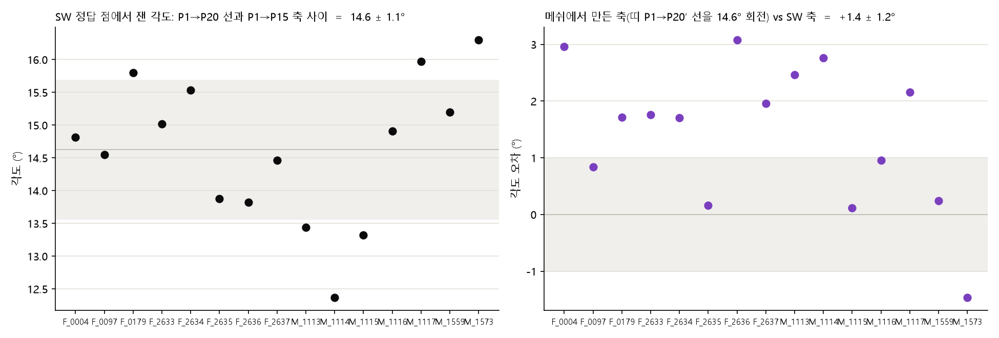
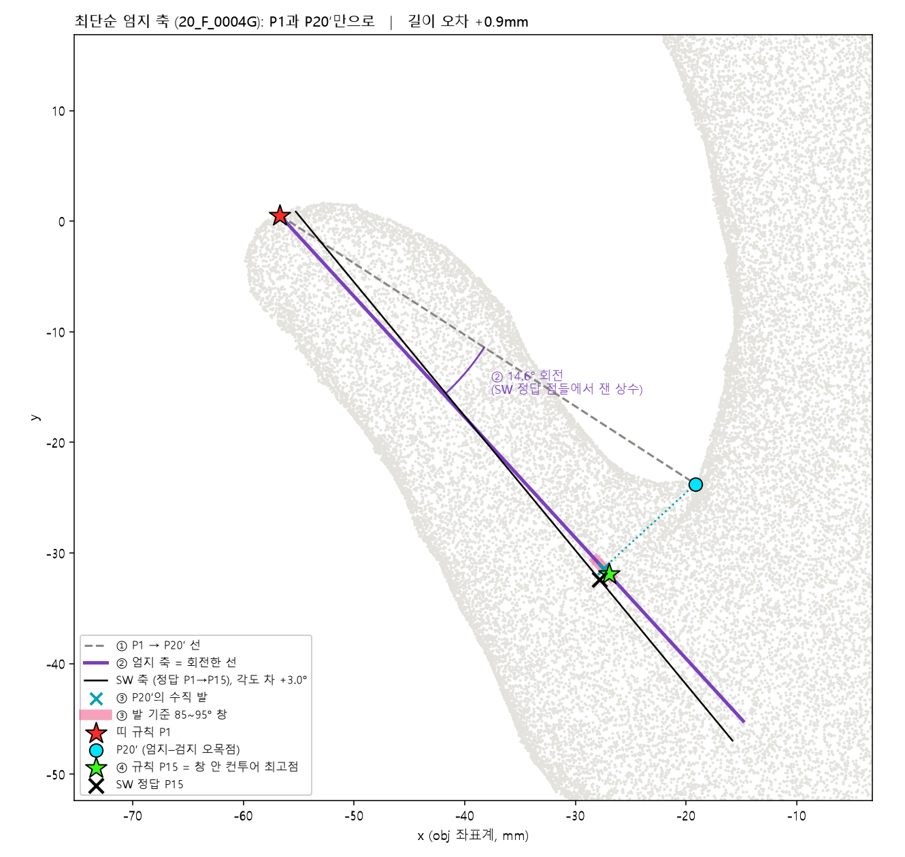
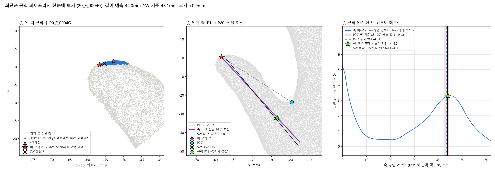
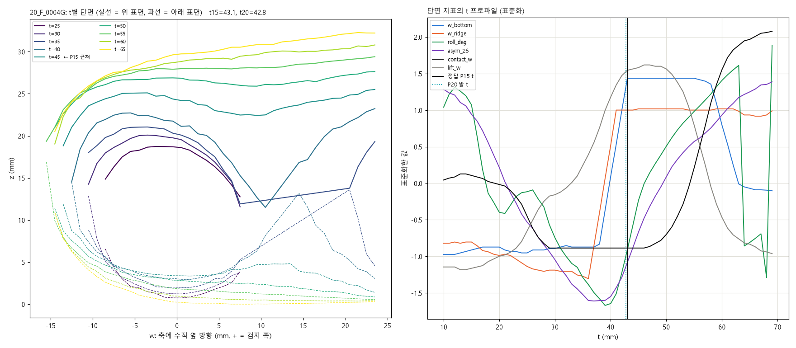
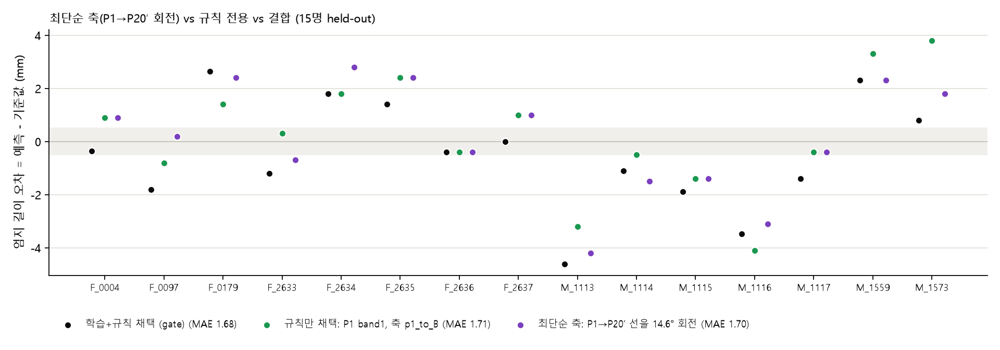
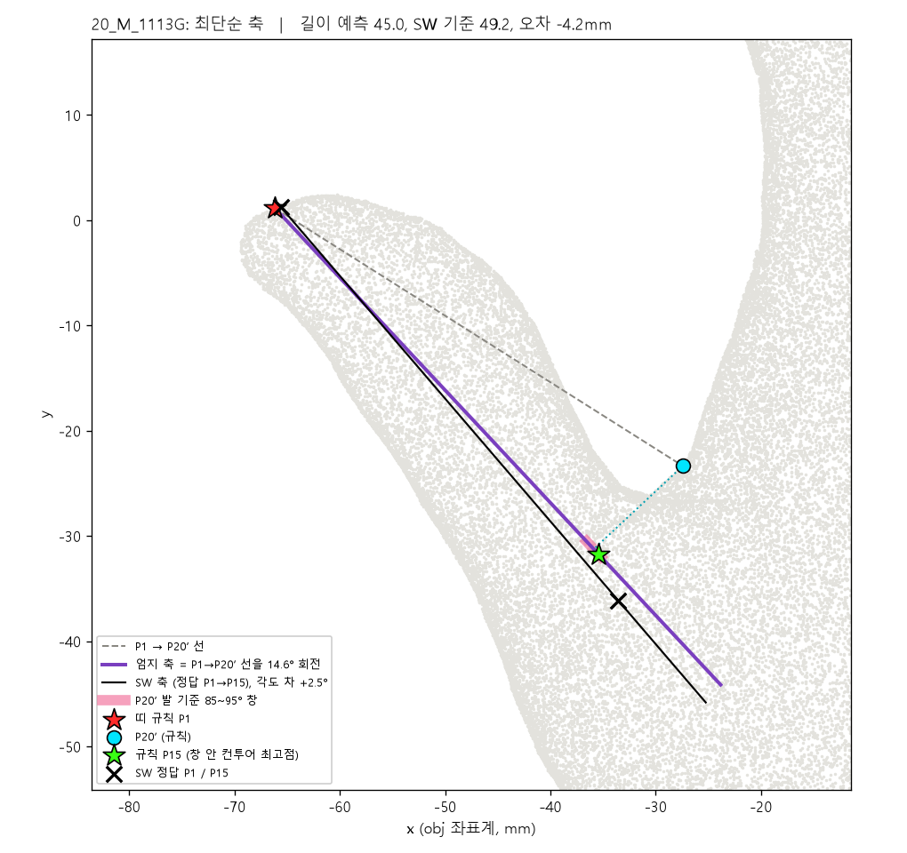
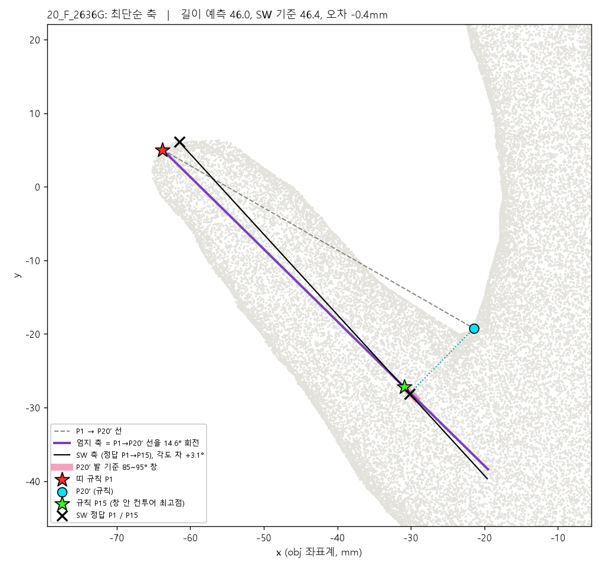

규칙 전용 파이프라인에서 엄지 축만 바꾼 판입니다. 폭 측정·내측 축·B 같은 중간 구성 없이, P1과 P20′ 두 점과 각도 상수 하나로 축을 긋습니다. P1(띠 규칙)과 P15(85~95° 창 안 컨투어 최고점)를 찾는 방법은 그대로입니다. 실행: python thumb_model/predict.py hand.obj --mode simple
결과 (15명, 각자 처음 보는 손으로 평가). 엄지 길이 평균 오차 1.70mm(최대 4.2), 0.5mm 이내 3명, 1mm 이내 6명, 2mm 이내 9명. 규칙 전용(1.71)·결합 파이프라인(1.68)과 같은 정확도이고, 축 방향은 SW 축과 1.4 ± 1.2°로 세 방식 중 흔들림이 가장 작습니다. 목표 0.5mm에는 미달합니다.
SW의 정답 점들에서 P1→P20 선과 P1→P15 축 사이 각도를 재면 15명 모두 14.6 ± 1.1°(범위 12.4~16.3)입니다. 손 크기·성별과 무관하게 거의 일정합니다. 그러니 메쉬에서 P1과 P20′만 찾으면, 그 선을 엄지 바깥쪽으로 14.6° 돌린 직선이 곧 SW 축의 근사입니다. 메쉬에서 실제로 그렇게 만든 축은 SW 축과 1.4 ± 1.2° 차이로, 5단계 구성(P1→B)의 2.0 ± 2.3°보다 오히려 안정적입니다.

이 상수는 우리가 길이에 맞춰 조정한 값이 아니라 SW 출력에서 직접 잰 각도입니다. 다만 데이터에서 온 값이므로 4절의 성적은 매번 그 사람을 빼고 14명으로 각도를 다시 재서(14.5~14.8°) 평가했습니다.
obj의 정점에 표면 샘플을 더해 촘촘한 점구름을 만들고, 손목 중심과 가운뎃손가락 끝으로 손 좌표계(+y = 손가락 방향, +x = 엄지 쪽)를 잡습니다.
손목 중심에서 방사형으로 훑은 실루엣의 들어간 곳 중 엄지–검지 사이가 P20′입니다(xy 오차 약 1.5mm).
엄지 끝 근처 점들 중 손 좌표계에서 y가 가장 큰 점부터 1mm 아래까지를 후보로 잡고, 그중 엄지 바깥쪽 끝점을 P1로 둡니다(xy 오차 1.41mm).
P1에서 P20′으로 가는 방향을 엄지 바깥쪽으로 14.6° 돌린 직선입니다. 재료는 P1, P20′, 상수 하나뿐입니다.
축을 따라 1mm마다 축 주변 ±12mm 안 점들 중 가장 낮은 z를 이어 밑면 컨투어를 만들고, P20′을 축에 수직으로 내린 자리 ±1.1mm(85~95°) 안에서 가장 높은 점을 P15로 둡니다.
길이 = P1과 P15의 xy 거리. 좌표, 길이, 확인용 PLY를 냅니다.


축이 길이에 주는 영향의 상한을 직접 쟀습니다. P1 띠 규칙과 P15 창 규칙은 고정하고, 축만 SW의 정답 축 방향으로 바꿔 넣으면 길이 평균 오차는 1.83mm입니다. 지금 축(1.70)보다 좋아지지 않습니다. 축을 완벽하게 알아도 P15가 축 위 어디에 놓이는지(축 방향 위치 t)의 편차가 약 2mm로 그대로이기 때문입니다. 축 방향이 δ° 틀리면 P15는 주로 옆으로 밀리는데, 옆 방향 오차는 길이에 2차항(2mm면 0.04mm)으로만 들어갑니다.
| 축 정의 (P1·P15 규칙 동일) | SW 축과 각도 | 길이 평균 오차 | P15 축 방향 편차(sd) |
|---|---|---|---|
| P1→P20′ 선을 14.6° 회전 (이 문서) | +1.4 ± 1.2° | 1.70mm | 1.98mm |
| P1→B (규칙 전용 채택, 5단계 구성) | +2.0 ± 2.3° | 1.71mm | 2.06mm |
| SW의 정답 축 방향을 그대로 사용 (상한) | 0 | 1.83mm | 2.18mm |
| P1–P20′ 선에 수직인 판 하나로 폭 중앙점 | +4.3 ± 2.0° | 1.82mm | 2.04mm |
| 엄지 점들의 PCA 주축 | +5.6 ± 1.6° | 2.23mm | 2.47mm |
결론: 축은 이미 병목이 아닙니다. 남은 오차를 줄이려면 P15의 축 방향 위치 t를 정하는 규칙이 바뀌어야 합니다. 지금은 "P20′의 수직 발 ±1.1mm 안에서 컨투어가 가장 높은 점"인데, 정답 축과 정답 P20을 넣어도 이 규칙은 +0.3 ± 2.1mm입니다. 즉 약 2mm의 사람별 편차가 이 규칙의 바닥이고, 지금까지 시험한 다른 단서(들림 봉우리, 접촉 최저점, P6, 접촉 패치, 곡률)는 모두 이보다 나빴습니다.
축이 병목이 아니라는 결론이 나온 뒤, 각도 창(85~95°) 대신 축을 따라 내려오며 형상에서 t를 직접 읽을 수 있는지 15명에서 확인했습니다. 축 오차를 빼고 보기 위해 SW의 정답 축 위에서 쟀고, 표의 숫자는 "정답 P15의 t − 후보 지점의 t"(평균 ± 표준편차)입니다. 규칙이 되려면 표준편차가 창 규칙(2.1)보다 작아야 합니다.
| 단서 (축을 따라 t마다 잰 양) | 정답 P15와의 차이 | 판정 |
|---|---|---|
| P20′ 수직 발 (현재 규칙의 중심) | −0.4 ± 2.4 | 기준 |
| xy 폭이 가장 좁은 곳 | (정의 불가) | 엄지 폭은 t 12~30에서 16~18mm로 일정하고, 손바닥과 합쳐지는 t≈31~36에서 한 번에 벌어짐. P15는 그보다 손목 쪽이라 폭이 정의되지 않음 |
| 안쪽·바깥쪽 가장자리 극점, 폭이 벌어지기 시작하는 곳 | +17 ~ +37 ± 4~11 | 기각 |
| 등쪽 높이(위 표면 z) 극값·곡률 | 창 끝 / ±5.6~6.4 | 등쪽은 손목 쪽으로 단조 증가(관절 융기 안 보임). 기각 |
| 두께·단면적 극값, 단면적 최급증가 | 창 끝 / −0.5 ± 3.4 | 기각 |
| 단면 형상(축에 수직인 w–z 곡선) 11개 지표의 극값·변화율 극값 44개 | 최선 +2.9 ± 2.8 | sd 2.5 이하는 전부 단조 지표가 창 끝에 걸린 것. 기각 |
| 앞서 기각된 것: 밑면 컨투어 봉우리·최저점·들림 시작·곡률, 접촉 패치, P6, 랜드마크 기하 구성 7만 개 | ±2.4 ~ ±6 | 기각 |

결론. 손바닥을 유리에 누른 이 자세에서는 엄지가 손바닥에 합쳐지는 지점부터 형상이 손바닥에 묻혀, P15 높이에서 축 방향을 알려 주는 단서는 P20뿐입니다. P15와 P20 발의 차이(−0.4 ± 2.4)는 사람마다 다르고 지금까지 잰 어떤 형상량과도 상관이 없었습니다. 메쉬만으로 t를 더 찾는 시도는 여기서 멈추는 것이 맞고, 다음 진전은 메쉬 밖에서 옵니다.
15명 각각을 빼고 나머지 14명으로 각도 상수를 재서(14.5~14.8°) 뺀 사람을 예측했습니다. 그 외에 데이터로 정한 값은 없습니다.
| 구성 (15명 held-out) | 길이 평균 오차 | 최대 | 0.5 / 1 / 2mm 이내 |
|---|---|---|---|
| 최단순 축 (이 문서): P1 띠 + P1→P20′ 14.6° 회전 + 창 규칙 | 1.70mm | 4.2 | 3 / 6 / 9 |
| 규칙 전용 채택: P1 띠 + 축 P1→B + 창 규칙 | 1.71mm | 4.1 | 4 / 7 / 10 |
| 결합 파이프라인 채택 (학습 + 규칙, gate 1.0mm) | 1.68mm | 4.6 | 3 / 4 / 11 |
| 학습 모델만 | 1.95mm | 4.3 | 2 / 6 / 9 |

사람별 오차(최단순 축, mm): 0004 +0.9, 0097 +0.2, 0179 +2.4, 2633 −0.7, 2634 +2.8, 2635 +2.4, 2636 −0.4, 2637 +1.0, 1113 −4.2, 1114 −1.5, 1115 −1.4, 1116 −3.1, 1117 −0.4, 1559 +2.3, 1573 +1.8. 사람별 그림 15장은 report/simple/<이름>.png.


관련 파일: thumb_model/final_pipeline.py(축 이름 p20_rotated, sw_axis_angle), thumb_model/final_config_simple.json(설정, phi_deg), thumb_model/predict.py --mode simple, thumb_model/simple_explainer.py(이 문서의 그림 전부 → report/simple/), thumb_model/section_views.py(3-1절 단면 그림 → report/t_rule_sections/). 규칙 전용 파이프라인 소개는 rule_only_pipeline_overview.html, 결합 파이프라인 소개는 final_pipeline_overview.html, 상세 수치는 align2_and_modeling_readme.md.